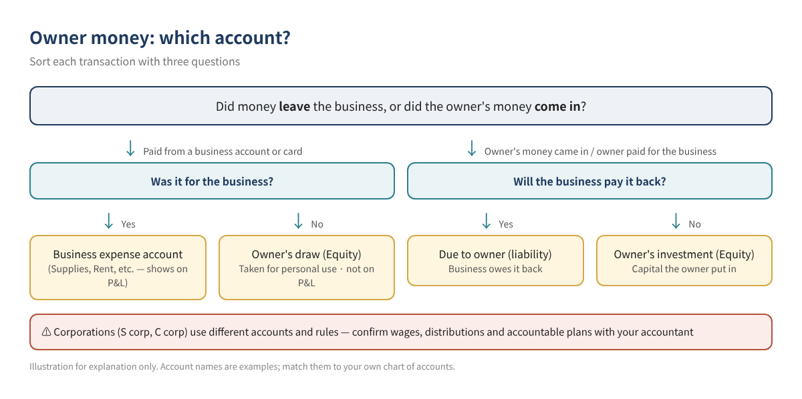
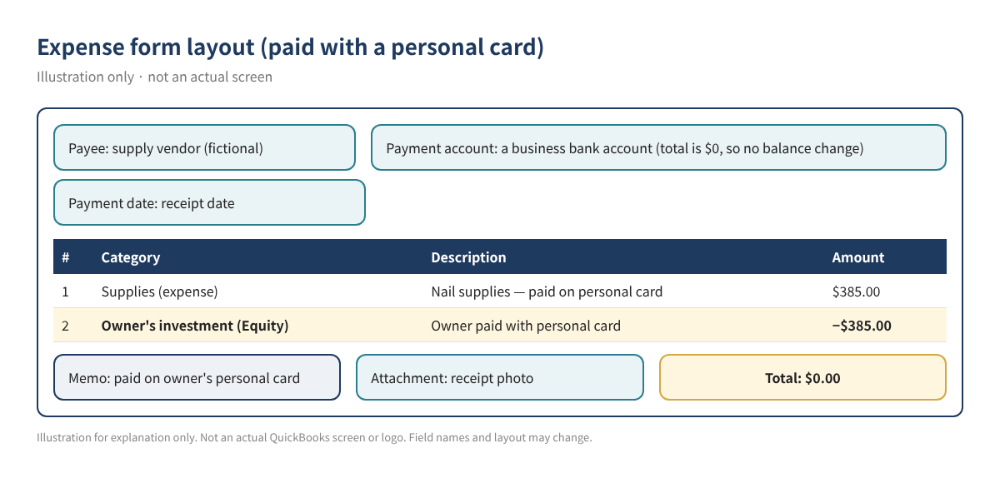
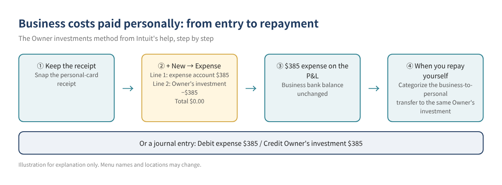
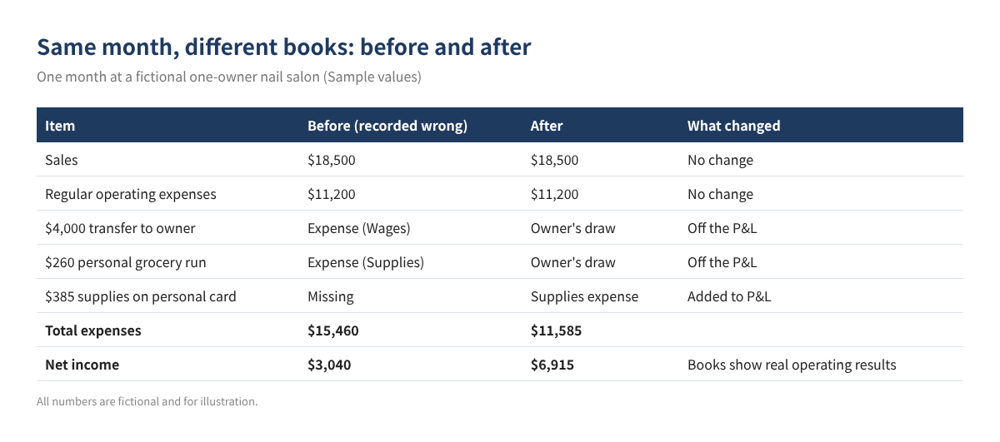

Is the Money You Take Out a Business Expense? How to Record Owner's Draws and Business Costs Paid Personally in QuickBooks Online
You open your Profit and Loss report at month-end and the profit looks far too small. Trace it back and you often find the money the owner moved out for living costs sitting in "Wages" or "Office expenses," and a family grocery run mixed in with business supplies. Meanwhile, the supplies the owner bought on a personal credit card never made it into the books at all, so a real cost is missing.
This guide walks through how to record money moving between the owner and the business in QuickBooks Online (QBO): withdrawals from the business account (owner's draws), personal purchases made with a business account or card, and business costs the owner paid with personal funds, including how to record the repayment. It expands on a topic introduced briefly in the series start, QuickBooks Online Basics for Beginners, and it pairs well with Bank Feeds: Match, Add and Rules.
Who this is for ☐ Owners who transfer money from the business account for personal use and aren't sure how to categorize it ☐ Anyone who has bought something personal on a business card ☐ Owners who bought supplies on a personal card in a pinch ☐ Anyone whose P&L profit doesn't match how the business is really doing ☐ Owners whose accountant has said "your personal money is mixed into the books"
1. The core rule: money the owner takes out is not an expense
Intuit's help describes an owner's draw account as an equity account that tracks company assets withdrawn to pay an owner. Because it is not an expense account, it does not appear on the P&L; it shows on the Balance Sheet, reducing equity. If owner withdrawals are booked as expenses, profit looks smaller than it really is and it becomes hard to tell how the business is performing.
IRS Publication 583 (Rev. 12-2024) advises opening a separate business checking account when you start a business, keeping it apart from your personal account, and using it only for business. It also gives the example of writing a check to yourself when you take money out for personal use, so there is a record. Intuit's help on personal funds likewise opens by recommending that you not mix business and personal money. The methods below are for keeping the books right when mixed transactions happen anyway.
Tip Account names vary by company: "Owner's draw," "Owner draws," "Partner distributions," "Owner investments," "Owner's investment," and so on. Use the names QBO created or your accountant chose, and avoid creating two accounts that do the same job.
2. The accounts depend on your business type
How an owner takes money out depends on the type of entity. The table below summarizes Intuit's "What is equity?" article and the IRS "Paying yourself" page. An LLC follows whichever tax classification it has, so confirm with your accountant which row applies to yours.
| Business type | How the owner takes money | Accounts commonly used in QBO | Watch out for |
|---|---|---|---|
| Sole proprietorship | Owner's draw | Owner's draw, Owner investments (Equity) | Intuit's help says to pay a sole proprietor with an owner's draw, not a paycheck through payroll. |
| Partnership | Distributions, guaranteed payments | Partner distributions, Partner contributions (Equity) | The IRS explains that partners are not employees, don't get a W-2 for distributions or guaranteed payments, and are reported on Schedule K-1. |
| S corporation | Officer wages (W-2) plus distributions | Wages as payroll expense; distributions to a distributions account | The IRS says an S corporation must pay a shareholder-employee reasonable compensation before non-wage distributions. |
| C corporation | Officer wages (W-2), dividends | Wages as payroll expense; dividends via Dividends/Retained earnings | Officers are generally employees; the IRS notes a loan to an officer without real loan terms may be treated as something else. |
S and C corporations often run the owner's wages through an outside payroll service; for that, see Recording Outside Payroll with a Payroll Clearing Account. The rest of this guide focuses on businesses that use an owner's draw, such as sole proprietorships and partnerships.
3. Three questions that decide the account
Ask these in order for each transaction and most of them sort themselves out.
- Did money leave the business, or did the owner's money come in? Separate transactions paid from a business account or card from those where the owner's money entered the business account or the owner paid a business cost personally.
- (If money left) Was it for the business? Business spending goes to the right expense account; personal spending goes to Owner's draw.
- (If money came in) Will the business pay it back? Intuit's help points out that money that must be repaid is a liability, not equity. If the business will repay it, use a liability such as "Due to owner"; if not, use an equity account such as Owner investments.

4. Set up the owner's draw account
First check whether your chart of accounts already has an owner's draw account; new company files often include one.
- Open Chart of accounts from Settings ⚙ or the Accounting area of the left menu. If the menu has moved, type "Chart of accounts" in the search bar.
- Search the list for "draw" or "equity" to see whether a similar account exists.
- If not, select New, choose Equity as the account type (shown as Owner's Equity on some screens), and name it "Owner's draw." If the detail type list offers Owner's draw or Partner distributions, choose it.
- Check the same way for an "Owner investments" (or Owner's investment, Partner contributions) account to record money the owner puts in.
- With several partners, sub-accounts per partner make it easy to see who took what. Agree on the structure with your accountant.
The full chart of accounts setup is covered in Opening Balances and Chart of Accounts Setup.
5. Case A: the owner takes money from the business account
Categorizing the transfer from the bank feed
- Find the transfer on the Bank transactions screen (Accounting/Banking area of the left menu, or search "Bank transactions").
- Enter the owner as the payee. Adding "(Owner)" after the name keeps it separate from customers and vendors.
- Choose Owner's draw as the category and add it.
- If the same amount goes to the same account every month you can create a rule, but don't base it on a condition that could also catch business spending (for example, just the word "Transfer").
Recording it with a check or manual entry
For a sole proprietor, Intuit's help says to write a regular check (not through payroll) and set the owner's draw equity account as the account. Open + New → Check (or Expense), choose the business bank account, select Owner's draw as the category, and enter the amount. When the same transaction later arrives in the bank feed, Match it instead of adding it again so you don't create a duplicate.
6. Case B: personal purchases on a business account or card
This covers a grocery run on the business card or a personal phone bill paid from the business account. It's tempting to Exclude these in the bank feed, but Intuit's help recommends adding personal expenses rather than excluding them, so the register still matches the bank statement, and suggests an owner's draw equity account. Excluded transactions don't appear in any register or report, so excluding money that really left the account makes QBO's balance drift from the bank's and breaks your reconciliation.
| Situation | Wrong treatment | Right treatment |
|---|---|---|
| Personal groceries on the business card | Categorized as Supplies / Excluded | Added as Owner's draw |
| Personal credit card bill paid from the business account | Categorized as a credit card expense | Categorized as Owner's draw |
| Transfer from business account to owner's personal account | Wages, or a Transfer as if between business accounts | Owner's draw (sole proprietor) |
| The same transaction downloads twice | Both added as Owner's draw | Record one; Exclude the duplicate |
Exclude is meant for transactions that didn't really happen, such as a duplicate download. For finding duplicates see Find Duplicate Transactions and Reconciliation Differences; for fixing transactions already categorized wrong, see Fixing Mistakes: Void, Delete, Undo and the Audit Log.
7. Case C: business costs paid with a personal card or account
Supplies bought on the owner's personal card never pass through the business account, so they never show up in the bank feed. Unless you record them, the expense is simply missing. Intuit's help describes two ways.
Option 1: record an Expense
- Open + New → Expense. Upload the receipt or enter the details by hand.
- On the first line, choose the expense account (for example, Supplies) and enter the amount.
- On the second line, choose Owner investments and enter the same amount as a negative so the transaction total is $0.00.
- Save. The expense lands on the P&L, and because the total is $0, the bank account selected on the form doesn't change.
Option 2: record a journal entry
In + New → Journal entry, put the expense account and amount in Debits on line 1 and Owner investments with the same amount in Credits on line 2, then save. This is handy for several items at once. If you need to move many lines at once, see Bulk Reclassify Transactions with a Journal Entry.

When the business pays you back
When the business account repays you, categorize that transfer to the same Owner investments account, either from the bank feed or with a Check or Expense. The money in and the money back cancel out in that account, and the expense is recorded only once. Categorizing the repayment to Supplies again would double-count the cost.
Intuit's "What is equity?" article also describes recording an owner-paid expense as a liability such as "Loan from owner" or "Due to owner" when the business plans to repay it, and reclassifying it to equity if the owner forgives it. Decide on one method with your accountant and use it consistently.

If you're a corporation In an S or C corporation the owner is usually an employee (an officer). IRS Publication 463 explains that if an employer's reimbursement arrangement doesn't meet the accountable plan rules (business connection, adequate accounting within a reasonable period, and returning any excess), the reimbursements are included in W-2 wages. Settle how the company reimburses you with your accountant first.
8. Worked example: a fictional one-owner nail salon
Take one month at "Sunny Nail Studio," a fictional sole proprietorship (not a real business). Three transactions need cleaning up.
| Transaction (Sample values) | Amount | Recorded as | Corrected to |
|---|---|---|---|
| Transfer from business account to owner's personal account (living costs) | $4,000 | Wages expense | Owner's draw |
| Personal groceries on the business card | $260 | Supplies expense | Owner's draw |
| Nail supplies bought on the owner's personal card | $385 | Not recorded | Expense: Supplies $385 / Owner investments −$385 |
| Next month: business repays the owner for supplies | $385 | - | Owner investments (not an expense) |
Sales for the month were $18,500 and other operating expenses were $11,200. As first recorded, total expenses were $11,200 + $4,000 + $260 = $15,460, showing net income of $3,040. After the corrections, total expenses are $11,200 + $385 = $11,585 and net income is $6,915. The $4,260 the owner took stays in Owner's draw on the Balance Sheet, not on the P&L, and once the $385 is repaid the Owner investments activity nets to zero.

9. Common mistakes
- Creating Owner's draw as an expense account: if it's named "Owner's draw" but its type is Expense, it hits the P&L. Make sure the type is Equity.
- Adding a sole proprietor to payroll: Intuit's help says a sole proprietor is paid with an owner's draw, not payroll.
- Excluding personal spending: removing money that really left the account throws off your bank balance. Add it as Owner's draw.
- Categorizing the repayment as an expense again: that double-counts the cost. Use the same Owner investments (or Due to owner) account.
- Entering personal-card costs without receipts: nothing supports the business purpose. Attach the receipt as you enter it; see Managing Receipts with the Mobile App.
- Using one account for money in and money out: your accountant has to split it apart at year-end. Keep Owner's draw and Owner investments separate.
- Parking amounts in Opening Balance Equity: if unclassified amounts are sitting there, see Clean Up Opening Balance Equity.
10. FAQ
Q1. Is an owner's draw tax-deductible?
An owner's draw is an equity account, not an expense, so it doesn't appear on the P&L. Tax treatment follows the rules for your business type, so check your situation with your accountant.
Q2. If I take the same amount every month, should it be payroll?
For a sole proprietor, Intuit's help says to use an owner's draw; regular amounts don't change that. For an S corporation it's different, because the IRS says reasonable compensation must be paid before distributions.
Q3. I have dozens of personal-card expenses. Do I enter them one by one?
Intuit's help describes uploading a statement with several items and deleting the lines you don't need, or putting several lines on one journal entry. Either way, keep a receipt for each cost.
Q4. I put my own money into the business account and it was recorded as sales.
Reclassify it from Income to Owner investments (if it won't be repaid) or a liability such as Due to owner (if it will). If the period is already reconciled, read the cautions in Fixing Mistakes first.
Q5. What happens to the Owner's draw balance at year-end?
The balance may not reset to zero on its own. How equity accounts are closed varies by company, so handle it with your accountant during year-end cleanup.
11. Self-check
- ☐ My Owner's draw account type is Equity
- ☐ I have a separate Owner investments (or Partner contributions) account
- ☐ Every transfer from the business account to the owner is categorized as Owner's draw
- ☐ Personal spending on business accounts and cards is added as Owner's draw, not excluded
- ☐ Business costs paid personally are recorded as an Expense or journal entry with the receipt attached
- ☐ Repayments use the same account as the original entry
- ☐ If I'm a corporation, I've agreed on owner pay and reimbursements with my accountant
- ☐ At month-end I check that no personal spending is mixed into the P&L
Related reading
- QuickBooks Online Basics for Beginners: 10 Things to Know First
- Getting Started in QBO: Opening Balances and Chart of Accounts Setup
- QBO Bank Feeds: Match, Add and Rules
- Managing Receipts: Snap and Match with the Mobile App
- Recording Credit Cards and Loans: Payments, Principal and Interest
- Fixing Mistakes: Void, Delete, Undo and the Audit Log
- Recording Outside Payroll with a Payroll Clearing Account
- Clean Up Opening Balance Equity
- Bulk Reclassify Transactions with a Journal Entry
This article is general educational information, not tax, legal or financial advice. Consult a qualified professional about your specific situation. QuickBooks Online screens, menu names, plan features and prices change frequently, so check the current screens and official Intuit and IRS guidance before you act. All businesses and amounts in the examples are fictional.
QuickBooks is a registered trademark of Intuit Inc.; not affiliated with or endorsed by Intuit.
Sources
- Intuit QuickBooks Help: Set up and pay an owner's draw
- Intuit QuickBooks Help: Pay for business expenses with personal funds
- Intuit QuickBooks Help: What is equity?
- Intuit QuickBooks Help: Exclude a bank transaction you downloaded into QuickBooks Online
- IRS: Paying yourself
- IRS: S corporation compensation and medical insurance issues
- IRS: Publication 463 (2025), Travel, Gift, and Car Expenses
- IRS: Publication 583 (Rev. December 2024), Starting a Business and Keeping Records